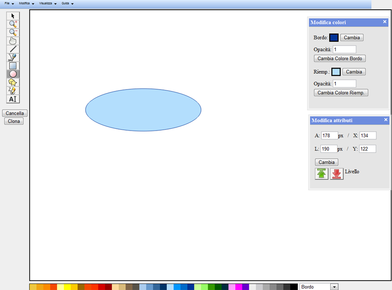
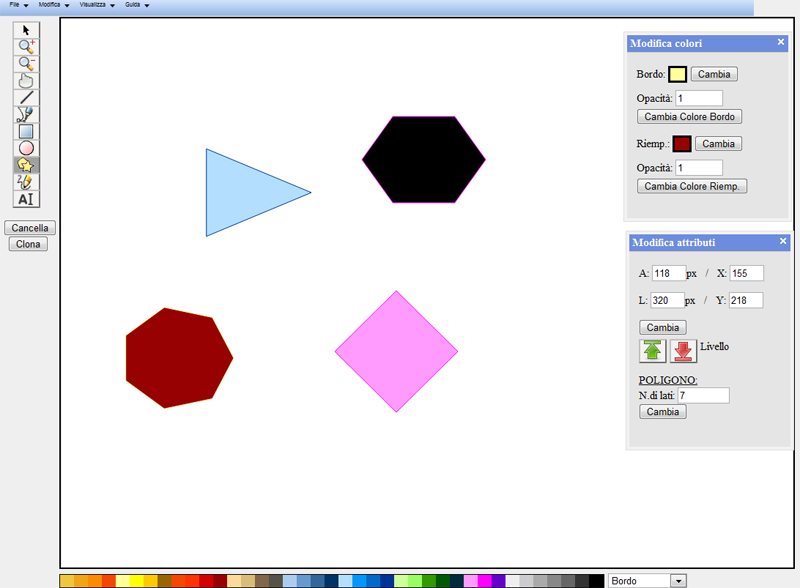
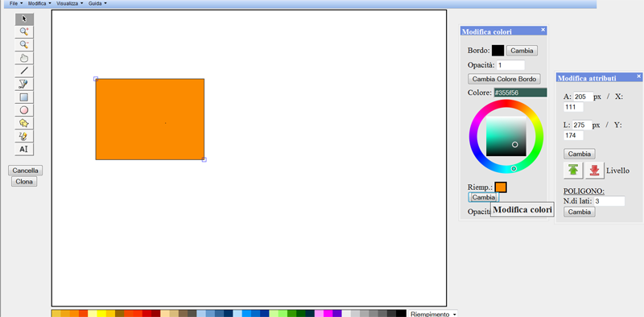

AJAXDRAW, “Software per il disegno grafico in tecnologie web”, è un software per il disegno grafico vettoriale sviluppato per il web. E' stato sviluppato dal gruppo WebShape che intende indirizzarne l' utilizzo a tutti gli utenti in possesso di una connessione internet.
Attraverso questa guida si cercherà di facilitare l'utilizzo del software e di aiutare l'utente a sfruttarne le piene potenzialità, diradando eventuali dubbi sul suo funzionamento anche attraverso esempi e schermate illustrative.
Questa sezione descrive l'interfaccia dell'applicazione
In cima alla pagina è presente il menu dell'applicazione, che permette di salvare o caricare file, accedere alla pagina di aiuto oppure di visualizzare alcune parti dell'interfaccia.
Sulla sinistra si trova una barra degli strumenti disponibili per disegnare, selezionare, eseguire degli zoom oppure spostare la porzione d'immagine visualizzata
Sotto la barra degli strumenti è presente un menu a tendina che permette di selezionare il livello di zoom. Sotto il menu vi sono due pulsanti che permettono, rispettivamente, di cancellare la figura correntemente selezionata e di cancellare tutto il disegno.
Al centro della pagina si trova l'area di disegno. Spesso, in particolare dopo uno zoom, quest'area non contiene il disegno nella sua interezza, ma solo una parte. L'area di disegno effettiva, ovvero l'area che verrà salvata, è circondata da un rettangolo di colore grigio.
Sulla destra vi sono due finestre: la prima permette di visualizzare e modificare i colori della figura correntemente selezionata oppure di impostarli per la prossima figura disegnata. La seconda permette di visualizzare e modificare diversi attributi della figura selezionata, come la posizione, l'altezza e altro. E' possibile spostare le finestre cliccando sulla loro barra del titolo e trascinandole. Cliccando sulla "X" a destra nella barra del titolo è possibile chiudere le finestre. Per riaprirle, è sufficiente andare sul menu e selezionare Visualizza > Colori per la prima finestra, e Visualizza > Proprietè per la seconda.
In basso si trova una tavolozza di colori che permette di selezionare rapidamente i colori più comuni. Il colore selezionato verrà assegnato al bordo oppure al riempimento di una figura a seconda del valore corrente del menu a tendina a destra della tavolozza.
Il programma dispone di un menu a tendina nella parte alta dell'interfaccia grafica.
Figura 1: menu a tendina
Nella sezione File e' possibile salvare il lavoro effettuato sul proprio computer
tramite file svg; oppure caricare un lavoro realizzato in precedenza. L'utente
dovra' rispettivamente scegliere un nome per il file da salvare o scegliere il file
da caricare.
Nella sezione modifica si puo' cancellare tutte tutto cio' che e' presente sul piano di disegno fino a quel punto disegnato e ripartire da zero con un nuovo disegno. Webshape consiglia gli utenti di salvare prima di cancellare per evitare di perdere il lavoro svolto fino a quel momento. Una volta accertata la possibilita' di pulire il piano di lavoro cliccare su Svuota Canvas.
Nella sezione Visualizza l'utente puo' visualizzare i dialog delle
proprieta' nel caso fossero stati chiusi tramite il tasto di chiusura in alto a
destra (la classica X). Colori si riferisce alla finestra che modifica i colori di una figura, proprieta' invece gestisce le posizioni e dimensioni.
Infine la sezione Guida contiene un collegamento al Manuale html del prodotto e un dialog che visualizza informazioni sul prodotto e sulla'azienda sviluppatrice.
La Toolbar
Le funzioni di disegno del programma sono presenti nei bottoni della parte sinistra dell'interfaccia grafica. L'utente deve cliccare sul pulsante della funzione desiderata. Il putatore del mouse cambia a seconda della funzione di disegno scelta. Se il mouse esce dal canvas mentre si disegna, il disegno di una qualsiasi figura viene concluso.
Figura 2: Selezione

Qui e' stata usata la funzione Seleziona per selezionare una figura e tutti i suoi parametri sono visualizzati nelle finestre grafiche a destra. Se una figura e' selezionata i suoi vertici sono evidenziati. In questo caso l'utente, tenendo premuto il puntatore mouse dentro alla figura puo' spostarla all'interno dell'area di disegno. Allo stesso modo, tenendo premuto sui vertici della figura, puo modificarne manualmente le dimensioni.
Figura 3: Disegno di un Ellisse

Qui e' stata selezionata la funzione Ellisse cliccando sull'apposito bottone (evidenziato in grigio). L'utente deve fare click nella pozione in cui vuole disegnare la figura (vertice alto a sinistra della fiura), poi col puntatore del mouse premuto decide la dimensione della figura. La stessa procedura vale per il disegno di un Quadrato rettangolo
Figura 4: Disegno di un Poligono regolare

Qui e' stato disegnato un Poligono regolare cliccando sull'apposito bottone (evidenziato in grigio). L'unica differenza rispetto a ellissi e quadrati-rettangoli sta nella finestra di proprieta' a destra dell'interfaccia grafica. E' infatti possibile stabilire il numero di lati del poligono tramite l'etichettta N. di lati. Basta cliccare sul bottone cambia per memorizzare le modifche sul numero di lati.
Figura 5: Strumento Mano per spostare, trascinare le figure
Qui e' stata selezionata la funzione Mano cliccando sull'apposito bottone (evidenziato in grigio). L'utente deve fare click dentro alla figura e poi, tenendo premuto il puntatore, puo' spostare la figura dove desidera. Tale azione e' realizzabile anche con il pulsante Selezione, descritto in precedenza.
Figura 6: Disegno a mano libera
Qui e' stata selezionata la funzione Disegno a mano libera cliccando sull'apposito bottone (evidenziato in grigio). L'utente deve semplicemente tenere premuto il puntatore del mouse e disegnare.
Figura 7: Disegno di una retta
Qui e' stata selezionata la funzione Disegno di una retta cliccando sull'apposito bottone (evidenziato in grigio). L'utente deve semplicemente tenere premuto il puntatore del mouse e usare il cursore per disegnare e direzionare la linea retta. La fine della retta e' determinata dal rilascio del mouse.
Figura 8: Curva di Bezier
AJAXDRAW implementa la funzionalità di disegno di una curva di Bezier consentendo all'utente di disegnare la curva in modo semplice e veloce, dopo la posa sul piano di disegno è possibile modificare la curva come tutti gli altri oggetti.
L'utente deve selezionare il pulsante per le curve di Bezier e successivamente fare click sulla zona del canvas dove si desidera disegnare la curva; il punto selezionato P0 sar&agrve; il punto di partenza della curva dopodichè fare click sul piano di disegno per descrivere i punti P1, P2 e P3 che determineranno rispettivamente: P1 e P2 i punti di direzione e traiettoria della curva mentre P3 rappresenta il punto di arrivo e termine della curva stessa.
Figura 9: Etichetta di testo
Qui e' stata selezionata la funzione Etichetta di testo cliccando sull'apposito bottone (evidenziato in grigio). L'utente deve semplicemente cliccare sull'area di disegno per scegliere la posizione del testo e aiutarsi con la finestra di proprieta' a destra per settare il testo dell'etichetta e il font.
Figura 10: Zoom

AJAXDRAW ha implementato la funzionalità dello zoom che permette all'utente di selezionare ingrandendo o riducendo le dimensioni degli oggetti presenti sul piano di lavoro dando così modo all'utente di selezionare e lavorare con oggetti piu grandi o piu piccoli rispettivamente poichè tutto il piano di lavoro viene ingrandito o rimpicciolito.
L'utente ha possibilità di impostare manualmente la percentuale di zoom agendo sulla combobox posta in basso a sinistra dell'applicazione con un click sulla combobox e un click sulla percentuale desiderata. Un altro modo per effettuare le modifiche di zoom sul piano di disegno prevede l'utilizzo dei pulsanti per aumentare il grado di zoom e del pulsante per diminuire lo zoom.
Figura 11: Cancella una figura
AJAXDRAW permette di cancellare una figura selezionata. L'utente dece cliccare sul pulsante di selezione immagine e successivamente fare click sull'immagine che si intende cancellare; a questo punto è possibile cancellare la figura selezionata con un click sul pulsante di cancellazione.
Figura 12: Clonazione di una figura
Qui e' stata selezionata la funzione di clonazione di un oggetto presente sul piano di disegno e precedentemente selezionato. Tale funzione permette di ottenere una copia di qualsiasi figura mediante un semplice click sul pulsante apposito Clona posto in basso a sinistra.
Figura 13: Cambiamento colore di bordo e riempimento di una figura

L'utilizzo della funzione di cambiamento del colore del riempimento di una figura da disegnare o selezionata avviene tramite l'interazione con il dialog Modifica Colori. Per il colore del bordo la procedura e' la medesima.
Per modificare il colore di una figura da disegnare e' necessario:
- Cliccare sul pulsante Cambia Colore Riempimento
- Selezionare un colore a piacere sulla ruota a comparsa e impostare il grado di opacita'
- Quando il colore e l'opacita' sono stati impostati procedere con il disegno della figura selezionata.
Questa funzionalita' prevede la possibilita' per l'utente di cambiare il colore scegliendolo dalla Tavolozza di colori posta sotto il piano di disegno: e' necessario selezionare sulla combobox a destra quale dei due colori si vuole modificare e cliccare sul colore preferito.
Nel caso in cui su voglia cambiare il colore di un oggetto gia' disegnato e selezionato, e' necessario impostarlo sempre nel dialog apposito e cliccare sul pulsante Cambia per confermare l'operazione.
Figura 14: Cambiamento del numero di lati di un poligono
Qui e' stata selezionata la funzione di cambiamento del numero di lati per il disegno di poligoni. Tale funzione viene gestita sempre con l'ausilio del dialog Modifica Attributi e precisamente nella casella riguardante il numero di lati. Modificando il valore e confermando viene modificato il numero di lati del poligono correntemente selezionato, oppure del prossimo poligono che verra' disegnato.
Figura 15: Cambiamento della posizione e delle dimensioni di una figura tramite coordinate
In quest'immagine e' stata utilizzata la funzione di cambiamento delle coordinate spaziali all'interno dell'area di disegno, e allo stesso tempo sono state cambiate anche la dimensione di altezza e larghezza della figura. Tutte le modifiche suddette sono effettuabili tramite la finestra di dialogo Modifica Attributi cambiando i parametri appositi, rispettivamente X e Y per la posizione sul piano, e H e L per altezza e larghezza della figura.
Messaggi di errore e loro significato
Durante l'utilizzo del programma e' possibile che vengano segnalati i seguenti errori:
- Errore di parsing durante il caricamento di un file SVG: significa che il file SVG caricato non e' valido
- Errore di comunicazione col server: il server non e' al momento raggiungibile. Riprovare piu' tardi, e se il problema persiste controllare lo stato della propria connessione ad internet. Se la connessione e' funzionante, contattare l'amministratore del server.
-Errore interno del server: il server ha riscontrato un problema interno. Contattare l'amministratore del server.